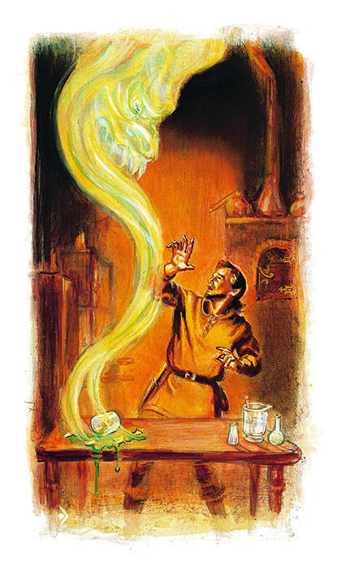

法术描述

法术描述（Spell Descriptions）
法术是根据它们的类别（祭司或法师）和级别而被划分的，其表格在附录3和附录4中。每个等级的法术都是按字母顺序排列的。每个法术描述的开始部分是以下这些重要的游戏信息：
名称（Name）：法术以名称相互区分。名称后的括号中是法术所属的学派（对于法师法术）。当列出学派不止一个时，该法术为所有列出的学派所共有。
有些法术是可逆的（他们可以被施展以达成与标准法术相反的效果）。这将在法术名称后备注。能施展可逆法术的祭司必须记忆其偏好的版本。例如，一个偏好造成轻伤法术的祭司必须在其冥想与祈祷时祈求此版本的法术。请注意法术选择与祭司阵营不同可能会招致严重的惩罚（可能的惩罚包括在一定时期内失去特定的法术、整个等级的法术、甚至所有的法术）。确切的结果（如果有的话）取决于该祭司守护神的反应，由DM决定。
可逆的法师法术以相似的方式运作。一旦法术被学会，两种法术形式均会记录于法师的法术书中。然而，法师必须在记忆法术时决定他想要施法法术的那种版本，除了该法术描述中特别指出的例外。例如，一个记忆了化肉为石的法师如想施展化石为肉，则必须等到该法术的后一种形式可以被记忆的时候（即休息八个小时和研究）。如果他能记忆2个6级法术，那么他可以记忆两个版本各一次或其中一个版本两次。
学派（School）：法术名称后的括号中是法术所属法术学派的名称。对法师法术来说，这可以用来确定专精法师能学习哪些法术，取决于该法师所选择的专精学派。对祭司法术来说，学派标示仅具参考意义，有时DM需要知道法术所属的学派来确定魔法抗力（例如，精灵对魅惑法术有抗力）。
领域（Sphere）：这一条仅在祭司法术中出现，标出了该法术所属的一个或多个领域。
距离（Range）：这里列出了从施法者到法术效果开始点或触发点的距离。一个“0”表示该法术只能用于施法者自身，法术效果自他展现或作用于他身上。“接触”表示若施法者可以在与自己身体接触的其他人身上使用法术。若无其他说明，其他所有法术都以某点为中心作用，该点需对施法者可见且处于法术范围内。如果需要的话，该点可以是一个生物或者一个物体。一般来说，仅能影响区域内有限数量生物的法术优先作用于距离中心点最近的生物，除非有其他因素影响（比如等级或者生命骰）。仅当施法者视线与法术能量可以同时穿过狭窄开口时，法术才能被施展。一个站在箭垛后的法师可以对另一边施展法术；但是通过小小的窥视孔来发出一个火球就是另一码事了。
成分（Components）：这里列出了所需成分的类别，V表示言语，S表示姿势，M表示材料。若法术需要材料成分，则于法术描述中列出。若无其他说明，法术成分会在法术施展时消耗掉。牧师的圣徽不会在法术施展时被消耗掉。在材料成分于法术结束时消耗的情形中，提前毁坏该成分可以结束该法术。
持续时间（Duration）：这里列出了法术的魔法能量能维持多久。持续时间为立即的法术在被施展时生效并结束，尽管法术的结果在通常意义上可能是永久或不可改变的。持续时间为永久的法术持续到法术效果被某些手段驱散，通常是通过驱散魔法。有些法术有可变的持续时间。在大多数情况下，施法者不能选择法术的持续时间。持续时间为定时的法术（例如，3轮每法师等级）应由玩家负责记录。持续时间为可变的法术（例如，3+1d4轮）应由DM秘密记录。当法术快要结束时，你的地下城主可以警告你，但法术快要结束时并不会出现征兆；请与你的DM交流来确定他如何处理这些情况。
某些法术可以依其施法者意愿终止。如要解消法术，其施法者必须身处法术中心的影响区域中――这与法术可以被施展的距离相同。施法者同时必须可以说出解消词语。请注意仅原法术施法者可以如此解消其法术。
施法时间（Casting Time）：若施法时间可修正先攻的变体规则被使用，这一栏非常重要。仅当给出的是一个数字时，施法时间可以加在施法者的先攻检定上。若法术需要一轮或多轮来施展，则法术自施法的最后一轮结束时开始生效。若德尔塞诺拉施展一个需要一轮的法术，那么法术在她开始施法的那轮结束时生效。若该法术需要三轮以施展，那么它在第三轮结束时生效。需要一个回合或多个回合的法术将在声明的回合结束时生效。
影响区域（Area of Effect）：这里列出了什么可以被法术影响，空间、体积、尺寸、重量等等。可被施法者塑形的区域或空间法术，若无法术描述另行说明则其在所有方向上尺寸最小为10英尺。所以，每施法者等级影响10立方英尺的云雾，在被12级的施法者施展时，可能是10英尺×10英尺×120英尺、20英尺×20英尺×30英尺，或者任何类似的12个10立方英尺方块的组合。若无特殊说明，诸如5英尺×10英尺×240英尺的组合是不被允许的。
某些法术（如祝福术）仅影响施法者的盟友或敌人。对所有此类情况，均依照法术被施展时施法者的想法来确定。例如，与守序中立牧师结盟的混乱善良角色能够得到该牧师施展的祝福术的好处。
豁免检定（Saving Throw）：这里列出了法术是否允许目标进行豁免检定以及成功豁免的效果：“通过则无效”指法术不产生任何效果；“?”指角色需受正常伤害量的一半；“无”指不允许豁免检定。仅在对抗附魔/魅惑法术时可以将灵知修正附加在豁免检定上。
坚固的物理障碍会提供豁免检定奖励与伤害减免。掩蔽与隐蔽可能也会影响豁免检定与伤害（DM对此有更多的信息）。
成功豁免了没有明显物质效果的法术（如魅惑术、定身术、魔魂壶）的生物会感受到一种特殊的作用力或刺痛，明显来自于魔法攻击。但这种刺痛并不足以用来推断具体的敌对法术效果或生物能力。
若生物通过了豁免检定，则可以假定其所携带的装备与财产亦豁免检定通过，除了法术特别指出的特殊情况。如果生物豁免检定失败或者攻击形式特别强大，需做豁免检定以确定财产是否幸存，此时使用物品的豁免检定（见DMG第六章）或者生物的豁免检定。这种情况发生时，DM会告知你。
任何角色都可以自愿放弃豁免检定。这会允许通常给予豁免检定机会的法术或类似攻击在角色身上完全生效。同样地，任何角色都可以自愿降低其魔法抗力，使得一个法术在对其施展时能自动生效。放弃豁免检定或魔法抗力并不必须是自愿的。如果一个生物或角色被哄骗降低了其抗力，那么法术将会完全生效，即使并不是受害者所期望接受的那个法术。受害者必须是有意的选择降低其抗力；措手不及并不满足该条件。
例如，当法师突然用火球攻击一个角色时，该角色可以做豁免检定，即使法师在此之前是友好的。但是，如果法师使该角色相信他将接受一个浮空术却施展了火球术，那么该角色就不能做豁免检定。你的DM将决定何时非玩家角色会降低其抗力。你必须告知你的DM何时你的角色降低了其抗力。
法术描述（Spell Description）：该文本给出了法术如何作用以及它的游戏效果的完整描述。其中包括了该法术的几种常见用法，如果真的有多于一种的话。而且它并不能概括玩家可能找到的所有用法。这种情况下，请参考文本中的法术信息来处理相应情形。
有多重作用的法术允许施法者在施展时选择想要哪种作用。通常一个多功能法术的单一功能较同等级单功能法术更弱。
给予属性，攻击检定，伤害检定，豁免检定等奖励或惩罚的法术效果通常并不彼此或与其他魔法叠加：最强的单一效果生效。例如，一个喝了巨力药剂并接受了2级法师法术力量术的战士。只有最强的魔法（药剂）生效。但是当药剂持续时间结束时，力量术依然有效，直到它持续时间也结束。